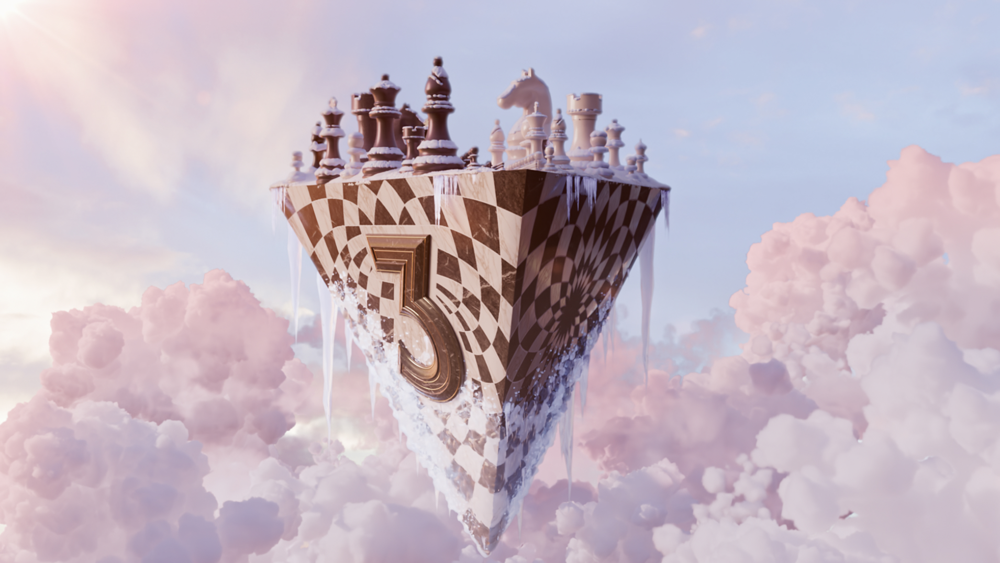
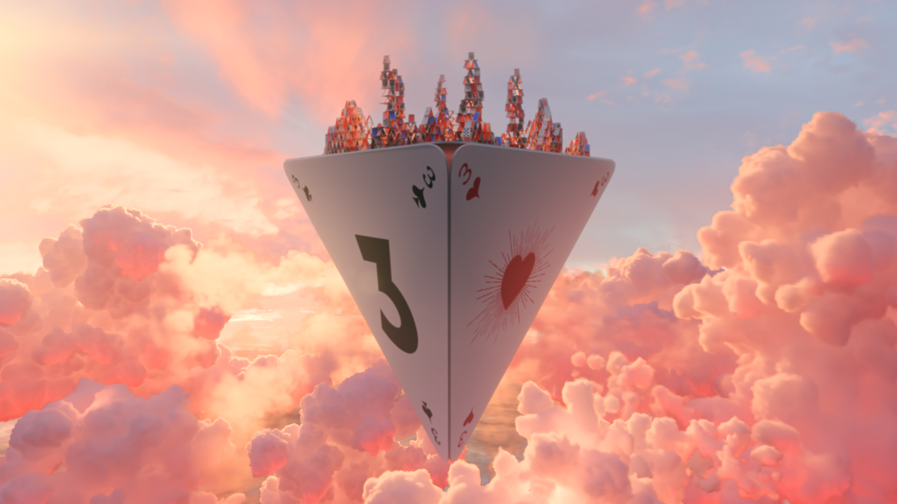
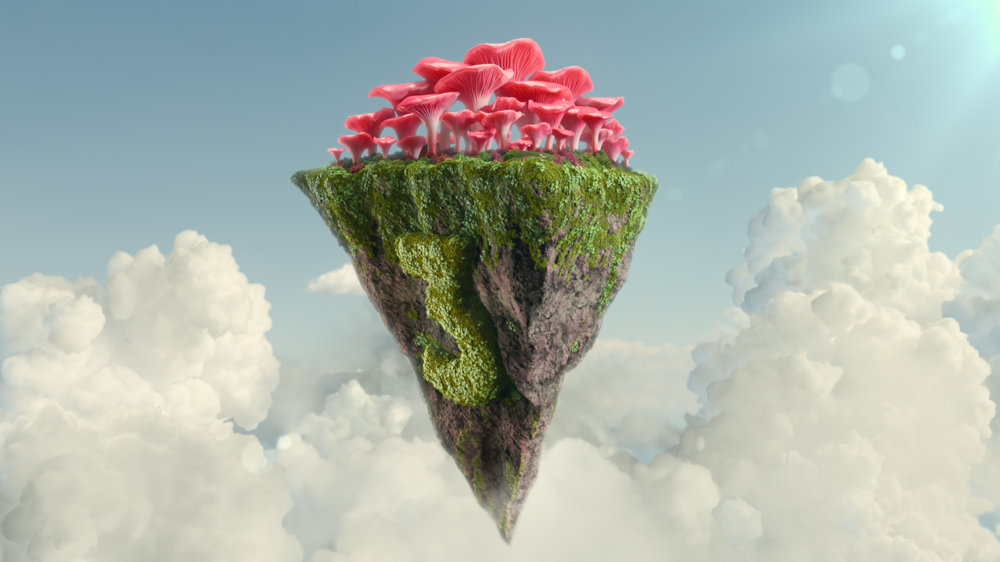
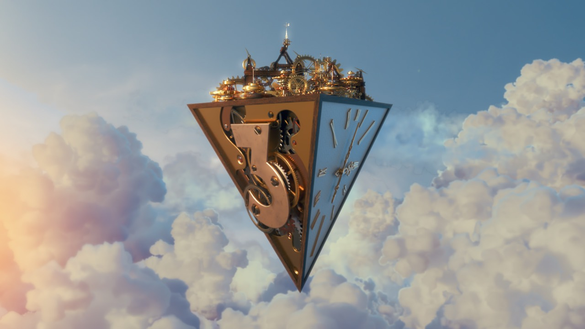

ТВ-3 · 2025
ТВ-3: ID «Страна чудес»
Выполнили полный цикл производства съемочно-графических ID-роликов для телеканала ТВ-3: от раскадровки и разработки анимации до съёмки и финального монтажа. Каждый ролик — отдельная фэнтезийная сцена, объединённая в единый визуальный сюжет.

Для ТВ-3 сняли серию 15-секундных ID по мотивам «Алисы в Стране чудес». Актёры попадают на парящие острова, форму которых мы взяли из тетраэдра в логотипе телеканала. Механический хроно-мир, шахматный конус и органический лабиринт — были смоделированы в 3D с проработкой мелких деталей.
Для материалов использовались процедурные шейдеры, фотограмметрия и текстурирование в Blender, после чего острова интегрировались в живую съёмку с точным совпадением движения камеры и света.
Для зимней версии адаптировали атмосферу и одежду героев с помощью генеративных инструментов.


